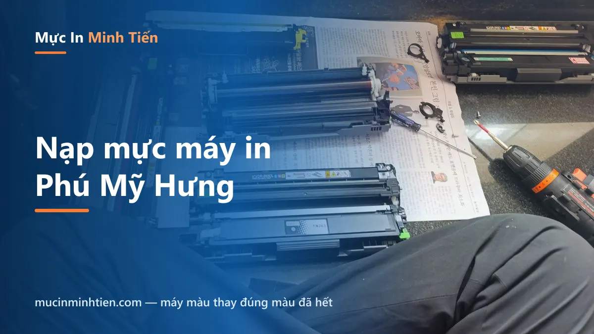
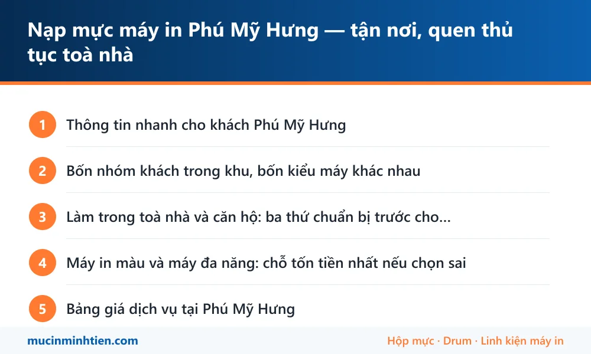

Nạp mực máy in Phú Mỹ Hưng — tận nơi, quen thủ tục toà nhà

Minh Tiến nhận nạp mực và sửa máy in tận nơi toàn khu Phú Mỹ Hưng — các toà văn phòng, căn hộ, trường quốc tế và phòng khám thuộc phường Tân Mỹ, Tân Phú. Kỹ thuật viên quen thủ tục đăng ký lễ tân và thẻ thang máy nên vào thẳng, làm tại chỗ 15–20 phút mỗi hộp mực, nạp mực từ 80.000đ.
Thông tin nhanh cho khách Phú Mỹ Hưng
| Hạng mục | Chi tiết |
|---|---|
| Thời gian có mặt | 45 phút trong giờ hành chính; qua cầu Kênh Tẻ giờ cao điểm cộng thêm khoảng 15 phút |
| Nhận ở đâu | Toà văn phòng, căn hộ, nhà phố, trường học, phòng khám và cửa hàng trong khu đô thị |
| Thủ tục toà nhà | Kỹ thuật viên mang CCCD đổi thẻ; khách báo trước tên công ty hoặc số căn và tên người đăng ký là vào thẳng |
| Làm tại chỗ | Nạp mực, thay drum – gạt – trục từ, vệ sinh máy, gỡ kẹt giấy, cài driver, nối máy in dùng chung |
| Giữ sạch chỗ làm | Trải tấm lót, hút sạch mực thừa, mang rác mực về — quan trọng với căn hộ và phòng khám |
| Giấy tờ | Xuất hoá đơn VAT cho công ty, báo trước khi đặt lịch |
Bốn nhóm khách trong khu, bốn kiểu máy khác nhau
Phú Mỹ Hưng không giống phần còn lại của Quận 7: tỷ lệ máy đa năng và máy màu cao hơn hẳn, và phần lớn đặt trong không gian kín có máy lạnh, thảm, hoặc gần khu khám bệnh — nên cách làm phải sạch.
- Văn phòng công ty, nhiều công ty nước ngoài: máy đa năng in màu A4/A3 có scan, in hai mặt, nối mạng cho cả phòng. Gọi nhiều nhất vì hết mực màu, kẹt giấy ở bộ đảo mặt, và lỗi kết nối sau khi công ty đổi router.
- Căn hộ, nhà phố: máy nhỏ để bàn hoặc máy phun, in bài vở cho con, hồ sơ cá nhân. Hay gặp cảnh để lâu không dùng nên tắc đầu phun.
- Trường quốc tế, trung tâm ngoại ngữ: in khối lượng lớn theo đợt, tới kỳ thi là máy chạy liên tục — vật tư hao nhanh hơn mức bình thường.
- Phòng khám, phòng răng: in toa và phiếu mỗi ngày, cần máy chạy ổn định và chỗ làm việc phải sạch tuyệt đối.
Làm trong toà nhà và căn hộ: ba thứ chuẩn bị trước cho nhanh
Phần lớn thời gian mất oan ở khu này nằm ở khâu vào toà nhà chứ không phải ở việc sửa máy. Ba thông tin khách báo giúp khi đặt lịch:
- Tên công ty hoặc số căn và tầng — để đăng ký với lễ tân trước.
- Ai là người đăng ký — nhiều toà nhà yêu cầu cư dân hoặc nhân viên công ty xác nhận thì bảo vệ mới cho lên.
- Quy định riêng nếu có — có nơi chỉ cho kỹ thuật viên lên ngoài giờ cao điểm, có nơi phải đăng ký trước một ngày.
Về chuyện sạch sẽ: nạp mực có bột mực rất mịn, làm ẩu là bám thảm và bàn. Kỹ thuật viên trải tấm lót, hút sạch mực thải trong hộp trước khi nạp, lau máy và mang toàn bộ rác mực về. Trong căn hộ có trẻ nhỏ hoặc phòng khám đang tiếp bệnh, báo trước để làm ở khu vực thoáng hoặc hẹn giờ vắng.
Máy in màu và máy đa năng: chỗ tốn tiền nhất nếu chọn sai
Máy màu ở khu này hay rơi vào hai tình huống tốn tiền không đáng:
Một là thay cả bộ bốn màu khi chỉ hết một màu. Máy laser màu có bốn hộp riêng; hết màu nào thay màu đó. Kỹ thuật viên in trang kiểm tra mức mực từng màu trước khi báo giá.
Hai là thay hộp mực trong khi lỗi nằm ở trống hoặc băng tải. Bản in màu bị lệch màu, có vệt lặp hoặc bóng mờ thường là trống hay băng tải chứ không phải hết mực — thay mực trong trường hợp đó không sửa được gì. Cách phân biệt nằm trong bài máy in bị sọc ngang và bảng chu kỳ lặp: đo khoảng cách giữa hai vệt là ra đúng bộ phận.
Với máy đa năng dùng chung cho cả phòng, sau khi sửa xong kỹ thuật viên kiểm luôn phần chia sẻ máy in qua mạng để không có máy tính nào bị rớt — xem thêm cách cài đặt và chia sẻ máy in qua mạng LAN.
Bảng giá dịch vụ tại Phú Mỹ Hưng
| Hạng mục | Áp dụng cho | Giá tham khảo |
|---|---|---|
| Nạp mực hộp mực laser đen trắng | HP, Canon, Brother phổ thông | 80.000 – 150.000 đ |
| Nạp mực laser màu | Tính theo từng màu, chỉ thay màu đã hết | Kiểm tra rồi báo giá |
| Bơm mực máy in phun | Epson, Canon dòng phun | từ 60.000 đ/màu |
| Thay trống (drum) | Bản in có vệt lặp đều | từ 120.000 đ |
| Thay gạt mực, trục từ | Bản in sọc hoặc mờ dần | từ 34.000 đ |
| Vệ sinh máy in tận nơi | Máy đặt trong văn phòng máy lạnh | từ 100.000 đ |
| Cài driver, chia sẻ máy in cho cả phòng | Văn phòng nhiều máy tính | Kiểm tra rồi báo giá |
Giá vật tư lấy đúng theo kho — xem bảng giá 773 mã. Kỹ thuật viên kiểm tra và báo giá trước khi làm; khách đồng ý mới thay.
Vật tư mang sẵn theo xe khi tới Phú Mỹ Hưng
Vật tư mang theo khi lên Phú Mỹ Hưng, chọn theo nhóm máy văn phòng và máy đa năng ở khu này:
| Vật tư mang theo | Dùng cho | Ghi chú |
|---|---|---|
| Hộp mực laser phổ thông | 12A, 85A, 35A, CF226A, Canon 337, TN-2380 | <a href="../../muc-in/">Tra theo mã mực</a> trước khi gọi cho nhanh |
| Mực laser màu | Máy in màu và đa năng màu văn phòng | Chỉ thay màu đã hết, không thay cả bộ |
| Drum, gạt, trục từ rời | Bản in có sọc hoặc mờ sau nhiều lần nạp | <a href="../../san-pham/truc-tu-dung-cho-hop-muc-hp-107a-may-in-m135a-m137fdn-m135w-m107w-w1107a-dung-cho-phoi-ch/">Ví dụ trục từ HP 107A</a> |
| Mực Epson 003, 664 | Máy phun trong căn hộ và phòng khám | <a href="../../muc-in/muc-epson-003/">Xem trang mực 003</a> |
| Bộ vệ sinh, tấm lót chống bẩn | Bắt buộc khi làm trong căn hộ, phòng khám | Mang rác mực về, không để lại trong nhà khách |
Lỗi hay gặp ở Phú Mỹ Hưng và bài hướng dẫn tự xử lý
Nhiều ca chỉ cần làm theo bài là xong, không phải gọi thợ. Đọc trước cho đỡ tốn tiền:
- Cách in 2 mặt trên Canon, HP, Brother, Epson — câu hỏi nhiều nhất từ văn phòng dùng máy đa năng
- Máy tính không nhận máy in — hay xảy ra sau khi công ty đổi router hoặc đổi máy
- Vệ sinh đầu phun Epson — máy phun trong căn hộ để lâu không dùng
- Máy in bị sọc ngang: bảng chu kỳ lặp — phân biệt lỗi trống với lỗi hết mực
- Trang dịch vụ chung cho Quận 7 — xem phạm vi và bảng giá đầy đủ

trueCâu hỏi thường gặp — khách Phú Mỹ Hưng
Nạp mực máy in ở Phú Mỹ Hưng bao lâu có người tới?
Toà nhà yêu cầu đăng ký khách, bên mình có quen thủ tục không?
Nạp mực trong căn hộ có làm bẩn nhà không?
Máy in màu hết một màu có phải thay cả bộ bốn hộp không?
Công ty cần hoá đơn VAT và hợp đồng thì làm thế nào?
Ngoài giờ hành chính hoặc cuối tuần có nhận không?
Khu vực phục vụ khác
- Sửa máy in, nạp mực tận nơi Quận 7 — có mặt trong 45–60 phút
- Nạp mực, sửa máy in tận nơi Quận 4 — sát trung tâm, tới nhanh
- Sửa máy in, nạp mực tận nơi Bình Chánh — Trung Sơn, Bình Hưng, Vĩnh Lộc
- Sửa máy in, nạp mực tận nơi Quận 8 — có mặt 30–45 phút, báo giá trước
- Sửa máy in, nạp mực tại phường Chánh Hưng — tới trong 30 phút
- Sửa máy in, nạp mực tận nơi Nhà Bè — nhận cả khu công nghiệp Hiệp Phước
- Sửa máy in, nạp mực xã Hiệp Phước và khu công nghiệp Hiệp Phước